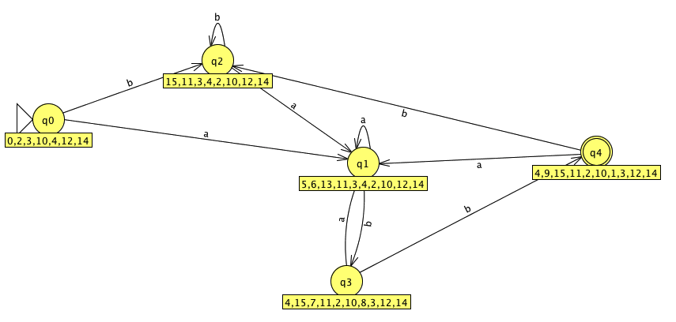

Notation: By default JFLAP uses λ (lambda) to denote the empty string. The text uses ε. JFLAP also uses '+' to denote '|' the OR operator.
Progressing through a transition diagram from state to state is theoretically described by finite-state automata (FA). An FA returns "Yes" if the string is in the language and "No" otherwise. Like transition diagrams, FAs have edges and states. The complete description for finite automata is shown below.
A Finite Automaton M is a 5-tuple <S, A, s0, F, t> where S = finite set of states A = finite set of input alphabet (the terminal alphabet) s0= start state F = set of final states, where F is a subset of S t = transition function
The transition function for a DFA returns, for each state in S and each symbol in A, a single next state.
t = S x A -> S // DFA transition function returns single stateThe transition function t for an NFA returns, for each state in S and each symbol in A including λ, a set of next states from S.
t = S x {A U λ} -> {f | f ∈ S} // NFA transition function
// returns s set of states
A string is accepted by DFA M if the set of states returned by t* contains at
least one accepting state.
If no transition is specified for a (state, symbol) pair then the FA is incompletely specified. The Ø (null) state entered in the table in this case. A string is rejected if it reaches a state where there is no transition for the next symbol.
L(M) is the language accepted by automaton M.
*----------------------------------------------*
| Example of a DFA: Newspaper Vending Machine |
*----------------------------------------------*
The control device for a newspaper vending machine keeps track of the amount
of money (nickels, dimes, quarters) entered, and opens the door only if the
amount is at least 25 cents.
The amount entered is the state of the machine. We move to a new state if
another coin is entered by following a transition function.
Transition table t for newspaper vending machine:
| n d q
--+-----------
0| 5 10 25
5| 10 15 25
10| 15 20 25
15| 20 25 25
20| 25 25 25
25| 25 25 25
If we are in state 10 and a nickel is entered, we transition to state 15.
If a quarter is entered from state 10, we move to state 25. In shorthand
string notation, ndq denotes entering a nickel, a dime, and a quarter in
that order. This automaton accepts all input strings that end up in the
final state 25. For example, we accept dnd but reject the string dnn.
This automaton M is defined as
A = { n, d, q }
S = { 0, 5, 10, 15, 20, 25 }
s0= 0
F = { 25 }
t = S x A -> S // defined by the above transition table
A sequence of states is called a path: 0, 5, 25
The language defined (or accepted) by automaton M, denoted by L(M), is the
set of all strings that label some path from s0 to a final state in F.
L(M) = { q, nq, dq, ndd, ddn, dnd, .... }
,-----------------------,
| A FORMALISM FOR L(M) |
'-----------------------'
We can recursively describe L(M) with a function.
Let function t* be an extension of function t in order to accept all possible
input strings rather than a single character:
t* : S x A* -> Q (Given a state and a string, outputs a new state)
A* is the Kleene-closure of the terminal alphabet A. Then t* fully describes
L(M):
L(M) = { w : t*(0,w) ∈ F }
A definition for t*(q,w).
If w == λ then t* = q
If w is a single character then t*(q, w) = t(q,w)
If w is a string then let w = va, where a is the last character, v is
everything before it. Then t* is recursively defined as:
t* (q, w) = d* (q, va) = d(d*(q,v),a)
// t* algorithm in C
state tstar( state q, string v)
{
if ( v == λ)
return q;
char a = lastsymbol(string); // returns the last symbol in a string
string u = allbutlastsymbol(v); // does just what you think it does
state r = tstar(q,u); // r is the state u takes us to
return( t(r,a)); // the transition from QxA -> Q
}
TSTAR EXAMPLE
|a b { The states are 0 and 1. The input symbols are a and b. }
--+--- F = { 1 }.
0 |0 1
1 |0 1
Notation: [current state, remaining string]
[0,aba] -> [0,ba] -> [1,a] -> [0, λ]
aba is not accepted since input is exhausted and we are not in a final state.
L(M) = {w in A* | w ends in b}
Note: The number of states in a path is |w| + 1. Thus, if the length of the
string is at least the number of states, a state must be repeated i.e. the
path must have a loop.
EXAMPLE
|a b F = { 3 }
--+---
0 |2 1
1 |1 1 Note that state 1 is a trap state.
2 |3 2
3 |3 2
L(M) = a ( a | b )* a, the set of all strings that start and end with a.
Computation for aaba:
[0,aaba] -> [2, aba] -> [3,ba] -> [2,a] -> [3,λ] accepted
EXAMPLE
|a b F = { 2 }
--+---
0 |0 1
1 |0 2
2 |2 2
L(M) = the set of all strings that contain the substring bb. The RE is:
(a|b)*bb(a|b)*
,-----------------,
| L(M) COMPLEMENT |
'-----------------'
We can construct an FA for the complement language L' by simply interchanging
accepting and non-accepting states. If we change F to F = {0,1}, the language
is the set of all strings which do not contain bb.
This method works in general. We can always transform an FA for a language L
into an FA for L'.
a*ba*b

(a|b)*abbis easily described by this NFA:
| State | a | b | ε |
| q0 | {q0,q1} | {q0} | Ø |
| q1 | Ø | {q2} | Ø |
| q2 | Ø | {q3} | Ø |
The problem with the above NFA is that when the scanner encounters an 'a' from q0 does it stay in q0 or move to q1? Such non-determinism works for humans but not for computer algorithms. Machine implementation must ultimately be deterministic. The question is how to convert a DFA into an NFA. It turns out that all NFAs can be converted into equivalent DFAs and, importantly, with roughly the same number of states.
OPERATION DESCRIPTION
e-closure(s) Set of NFA states reachable from NFA state s on e-transitions
alone
e-closure(T) Set of NFA states reachable from some NFA state s in set T
on e-transitions alone; this is the union of all e-closure(s)
operations
move(T,a) Set of NFA states to which there is a transition on input
symbol 'a' from some state s in T.
Input: regex r over alphabet Sigma (Σ) Output: NFA N accepting L(r), with new start state i and new final state [f].Method: Parse r into subexpressions. Apply conversion rules to each subtree of the parse tree. Then construct larger NFAs by combining the NFAs of all the subtrees.
The validity of this approach is shown with structural induction using the atomic rules (Rule 1 and Rule 2) as a basis.
Notation: Let s,t be regexes; then s0, t0 are the respective start states
and [s] and [t] are the respective accepting (final) states.
N(r) is the NFA accepting r; N(r) is defined by a transition table.
λ
RULE 1. if r = λ then N(r) = i [f]
a
RULE 2. if r = some terminal symbol 'a' in Σ then N(r) = i [f]
RULE 3. Union Operator. If r = s|t, then N(r) accepts either L(s) or L(t). Use
λ transitions to combine N(s) and N(t). Then N(s|t) is defined by all
transitions for N(s) and N(t) combined by the following transitions:
λ
i {s0,t0}
[s] [f]
[t] [f]
RULE 3. Concatenation Operator. If r = st, then N(r) accepts input accepted
by N(t) followed by input accepted by N(s). This is accomplished by assigning
i = s0, [f] = [t] and by merging all accepting states for N(s) with the
start states of N(t). Concatentation does not require any new transitions.
RULE 4. * (Kleene closure) Operator. If r = s* then N(r) consists of new states
i and [f], one λ transition from i to [f], two λ transitions from i to s0 and
[s] to [f] to bracket N(s), and one λ transition from [s] back to s0. The four
new transitions added to N(s) are:
λ
[i] [f] // transition for s^0
i s0 // this transition ensures a single start state
[s] [f] // this transition ensures a single final state
[s] s0
Note: the goal is to create an NFA with a single start and a single final state.
RULE 5. Parentheses Operator. If r = (s) then L(r) = L(s), thus N(s) = N(r).
,---------------------,
| Example. (a|b)*abb |
'---------------------'
Step 1. Construct the expression tree.
r_11
/ \
r_9 r_10
/ \ |
r_7 r_8 b
/ \ |
r_5 r_6 b
/ \ |
r_4 * a
/ / \
( r_3 )
/ \ \
r_1 | r_2
| |
a b
Step 2. Apply rules to regexes starting with tree leaves (atomic rules). The
NFA will be constructed in a depth-first left to right traversal or the
expression tree. The first partial NFA constructed is for r_1 and the last
is r_11. Summary:
For regex: Apply:
r_1 a Rule 1. construct NFA for terminal a
r_2 b Rule 1. construct NFA for terminal b
r_3 a | b Rule 3. combine r_1 and r_2 and assign new start state i
r_4 (r_3) Rule 5. since r_4 = r_3 skip
r_5 (a | b)* Rule 4. λ everywhere and assign new start and end state
r_6 a Rule 1. construct NFA for 'a' (can't reuse NFA from r_1)
r_7 (a | b)*a Rule 3. merge tail of r_5 NFA with head of r_6 NFA
r_8 b Rule 1. construct new NFA for terminal b
r_9 (a|b)*ab Rule 4. merge tail of r_7 with head of r_8
r_10 b Rule 1. new NFA for terminal b
r_11 (a|b)*aab Rule 3. merge tail of r_9 with head of r_10
The start state for the NFA comes from r_5, the final state from r_10.
The transaction diagram for the NFA constructed from (a|b)*abb using the
M-Y-T algorithm is shown below (generated by JFLAP with the epsilon
transitions between the final abb removed).
| NFA States | DFA State | a | b |
| {q0,q1,q2,q4,q7} | D0 | D1 | D2 |
| {q1,q2,q3,q4,q6,q7,q8} | D1 | D1 | D3 |
| {q1,q2,q4,q5,q6,q7} | D2 | D1 | D2 |
| {q1,q2,q4,q5,q6,q7,q9} | D3 | D1 | D4 |
| {q1,q2,q4,q5,q6,q7,q10} | D4 | D1 | D2 |
Corresponding Graph generated by JFLAP
Note: q0=D0, q1=D1, q2=D2, q3=D3, q4=D4. The subsets do not correspond to the table above because the extra lamdba transitions were not removed from the NFA before applying subset construction. The resulting NFA is correct.
